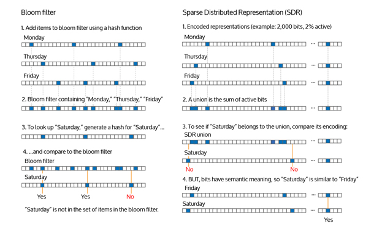

Wait, the brain is a Bloom filter? - @petrillic
 Ian Danforth•Engineering
Ian Danforth•Engineering
This insightful tweet came from the Strangeloop keynote after Jeff Hawkins described Sparse Distributed Representations (SDRs). This isn’t the first time someone has noticed that SDRs and Bloom filters use similar data structures, so we’d like to describe the significant differences in their implementation and capabilities.
Bloom filters are a fast and memory-efficient way to tell if you’ve seen something before. They can tell you with 100% confidence that something is new, though they can’t tell you for sure if an input has been seen before. (See this excellent visualization by Bill Mill).
SDRs, core to Numenta’s Cortical Learning Algorithm, are the way we represent and recognize inputs in a system like Grok:
The concept of SDRs comes from neuroscience, where sometimes it is called sparse coding. SDRs are the language of brains in the same way that bytes and words are the language of digital computers. Sparse distributed representations have several desirable properties including high capacity, graceful degradation, tolerance to errors, and the ability to simultaneously represent multiple values in one representation.
Both Bloom filters and SDRs store information in data structures called bit arrays (or vectors), long strings where each character is either a one or a zero. When encountering a new input, both create a representation of that input by selecting a set of those bits to set as ones, or as we say “turn on.” Because both choose a small subset of the bits to turn on, these representations can both be considered “sparse.” Both, depending on the size of the array, have a high capacity to store many inputs, and both can represent multiple inputs simultaneously.
We need a bit more detail about Bloom filters to understand how they differ fundamentally from SDRs.

To create a Bloom filter, you select one or more hashes. These are functions that take an input and select which small set of bits to turn on in the bit array.
Three key properties determine the efficient and predictable nature of Bloom filters. Take, for example, a Bloom filter with three inputs: “Monday”, “Thursday”, “Friday.” In a Bloom filter, the output bits representing these inputs are uniformly distributed across the bit array. The representation of these outputs are independent of any similarities from the inputs. And each input always maps to the same output representations.
SDRs, on the other hand, assume the exact opposite!
Modeled after the brain, SDRs care about semantic relationships. We care that inputs with similar meanings are stored in similar ways. Because Thursday is much closer to Friday than it is to Monday, SDR representations of the inputs "Thursday" and “Friday” are similar!
Semantic relationships allow an SDR to answer not only the question, “Have you ever seen this?” but also the question “Have you ever seen something like this?” Today we store inputs in a bit array that is 2000 bits long. Each new input turns on 40 of those bits. If two inputs are very similar they may share a good number of bits that get turned on (violating the independence assumption of Bloom filters) and if they are very different they will almost certainly have a very different set.
Going back to our example, let’s show a Bloom filter and an SDR the input "Saturday." If “Saturday” contains a single bit that is not on in the filter, the Bloom filter confidently tells us it has never seen that before. An SDR, on the other hand, would say, “Wait a minute, I’ve seen something close to that, how about “Friday”?” An SDR is robust to some variations in input and is able to generalize based on semantic closeness of inputs to previously seen values. These properties are crucial in allowing Grok to correctly identify the same object in different circumstances.
Similar inputs get blended, or, as we say, “pooled” together. When we retrieve values from our data structure even a small overlap on the input will generate some output. You could say our false positive rate is much higher than a Bloom filter. However, overlapping inputs allow us to group similar things together. Also because SDRs produce output when there are partial matches, they are tolerant of noise. We can recognize two similar inputs even if they are obscured, just like a human can recognize a loved-one’s face even through the branches of a tree, or a familiar voice in a noisy room.
A false positive for a Bloom filter, in contrast, doesn’t mean anything. It’s governed by chance, not semantic closeness. Bloom filters throw away similarities in inputs, whereas SDRs take advantage of them.
SDRs also differ by having dynamic representations. They change over time. The same input doesn’t always map to the same representation. When learning new things, which representation you end up with in the SDR depends on what the system has seen before. In addition if you haven’t seen an input for a while its representation may have degraded somewhat. Because SDRs retain representations strongly that are regularly reinforced and forget ones that are not, SDRs learn and retain the most important inputs without getting “filled up” by noise. A Bloom filter is static and will continue to get filled up for as long as it continues to see new inputs. But then again, a Bloom filter that "forgot" wouldn’t be very useful.
As you can see, combining values and storing them in a bit array is a powerful idea. You can end up with a memory-efficient test like the Bloom filter, or a learning system that is general purpose, robust, adaptive, and high capacity like SDRs. There’s actually much more to SDRs. I’ve only described the use of SDRs in a component of our system called the Spatial Pooler. There’s a whole other set of representations in our Temporal Pooler that we don’t have time to go into here.
You can find more information on SDRs, their properties and how they relate to the brain, in another recent keynote by Jeff Hawkins.
For more information on Bloom filters, the wikipedia article is reasonably accessible.
Ian Danforth•Engineering